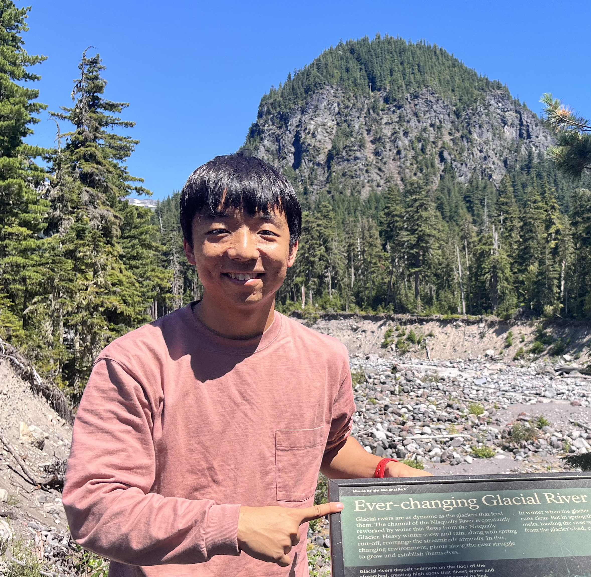
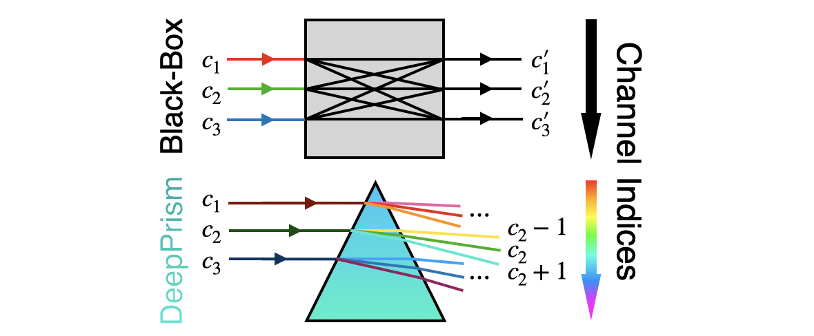
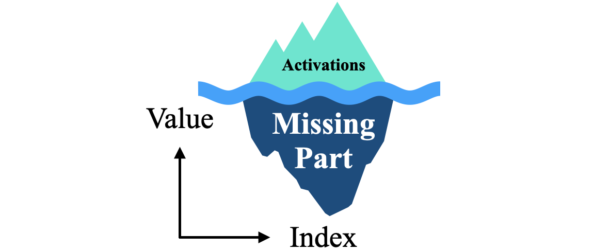
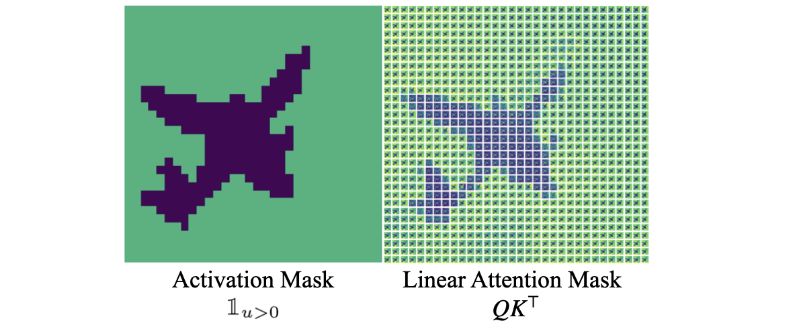
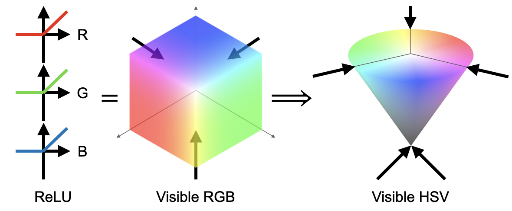
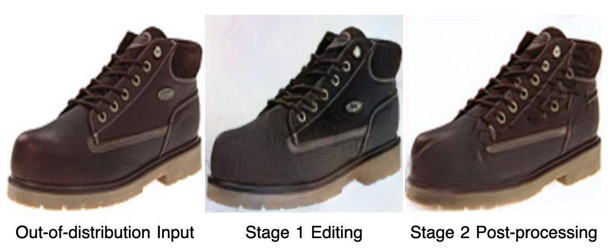

|  | Research Interests: I'm interested in visual generative models and a broad range of topics in deep learning. Currently I'm working on the improvement neural network architectures for better parameter/training/inference efficiency and with more effective control, with a unified geometrical framework. I'm a senior-year PhD student in CEREMADE, Paris Dauphine University - PSL and Paris AI Institute (PRAIRIE), fortunately advised by Laurent D Cohen. Before that I was a graduate student in University at Albany advised by Yiming Ying. I recieved a Master's degree on Applied and Theoretical Mathematics in PSL University advised by Olga Mula and Robin Ryder, and a Bachelor's degree from School of Mathematical Sciences in Fudan University. Here are my Institutional Page, CV, GitHub, Twitter and Linkedin. Email: cfu-at-ceremade-dot-dauphine-dot-fr, evergreencqfu_at_gmail_dot_com |
|  | DeepPrism. An unprecedented 1000x better parameter-efficient network design for generative models, by leveraging an equivariance on the channel dimension, where training and inference FLOPs are also greatly reduced. This design applies equally to attention layers and maintains generation performance for a variety of models such as VAE, StableDiffusion (LDM). |
|  | Tip of the Iceberg. An improvement on the widely-used perceptual loss, to achieve 10x more training efficieny for generative models, by calculating non-singular symmetric features instead of activations in the path-integral along layers. |
|  | Unifying Activation and Attention. A projective-geometric point of view to unify different operators in neural networks, under which the self-attention function intrinsically coincides with the activation-convolution layers by defining proper kernel functions. This connection does not change the form of commonly-used neural networks, can be visually confirmed, and leads to a unified view of the dynamics of neural processes. |
|  | Conic Linear Units. A non-pointwise activation function with unprecedented infinite-order symmetry group, which improves generation quality, and enables alignment of neural networks with different widths. Application involves more flexible Federated Learning using Optimal Transport. |
|  | Contour-Based Image Manipulation. A robust unsupervised two-stage image manipulation model by modifying contour constraints. The use of contour constraints is inspired by the sparsity of the edited constraint, while the coarse-grained post-processing single-image GAN alleviates distortion caused by out-of-distribution inputs. |
Changqing Fu and Laurent D. Cohen. Conic Activation Functions. In Proceedings of UniReps: the Second Workshop on Unifying Representations in Neural Models, NeurIPS 2024, Proceedings of Machine Learning Research, Vancouver, Canada.
Changqing Fu and Laurent D. Cohen. Conic Linear Units: Improved Model Fusion and Rotational-Symmetric Generative Model. In Proceedings of the 19th International Joint Conference on Computer Vision, Imaging and Computer Graphics Theory and Applications - Volume 2: VISAPP, Virtual and Rome, Italy. pdf poster
Changqing Fu and Laurent D. Cohen. DeepPrism: Channel Convolution for Lightweight Generative Models. In Proceedings of the 5th International Conference on Video, Signal and Image Processing, ACM 2023, Virtual and Harbin, China. (Best Presentation Award) pdf slides
Changqing Fu and Laurent D. Cohen. Geometric Deformation on Objects: Unsupervised Image Manipulation via Conjugation. In Proceedings of the 8th International Conference on Scale Space and Variational Methods in Computer Vision, Lecture Notes in Computer Science, Springer 2021, Virtual Event. pdf slides
Poster in Workshop on Geometry-Informed Machine Learning, Mines ParisTech, July 3-4, 2024, Paris, France
Stability AI Research Program @CogX, 12-14 Sep, 2023, London, UK
Symposium on AI in Biology and Health, Institut Pasteur, July 3-4, 2023, Paris, France
Speaker in Ellis unConference, July 25 2023, Paris, France
Poster in Workshop on Optimization and Machine Learning, June 26-27 2023, Toulouse, France
General session “AI in Healthcare”, INFORMS Annual Meeting, Oct 25 2021, Virtual and CA, USA
Invited Speaker in Applied Mathematics Ph.D. Seminar, Sep 13 2021, Fudan University, Shanghai, China
Winter School for Young Researchers, CEREMADE, Feb 28 2022, Normandy, France
Speaker in Artificial Intelligence Interdisciplinary Institutes (3IA) Workshop, Nov 2021, Toulouse, France
Young Researcher's Seminar, CEREMADE, Paris Dauphine University, June 2 2023, Feb 2 2023, Feb 28 2022, Jan 20 2022, Paris, France
International Summer Program in Economics Education, Aug 2015, Hebrew University of Jerusalem
Business Summer School, Aug 2014, University of Cambridge
ICCV, ECCV, AISTATS, AAAI, ICLR, NeurIPS, CVPR